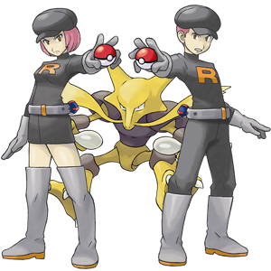

La Team Rocket a capturé Alakazam!
Pour sauver le pauvre Pokémon...
1. Ask to speak with one of the French tutors. They are scheduled to be in the lab:
- Monday, Tuesday 10:30am - 12:30pm, 6pm - 9:50pm
- Wednesday 10:30am - 2pm, 6pm - 9:50pm
- Thursday 2pm - 4pm
- Friday 9am - 4:50pm
Note: If a French-speaking tutor is not in the lab, ask for the alternative activity.
2. In French, introduce yourself to the tutor and be sure to ask for their name how they are doing. Share a little about where you live (rooms in your house, describe your bedroom, who you live with, pets, etc.). Then, ask at least two questions about where they live. They can be questions we saw in class or you can create your own.
3. When you finish your conversation, ask for a signature in your Marceldex. You can use the phrase, Signez, s’il vous plait. (see-nyay see voo play) Be sure to say thank you!
4. Take what you found out about the tutor and write a short 1-2 sentence summary. Don't forget to include the tutor's name!
[contact-form][contact-field label="Name" type="name" required="1" /][contact-field label="Tutor's Name" type="text" required="1" /][contact-field label="Summary" type="textarea" required="1" /][/contact-form]
5. When you are finished, be sure to submit, then click here!